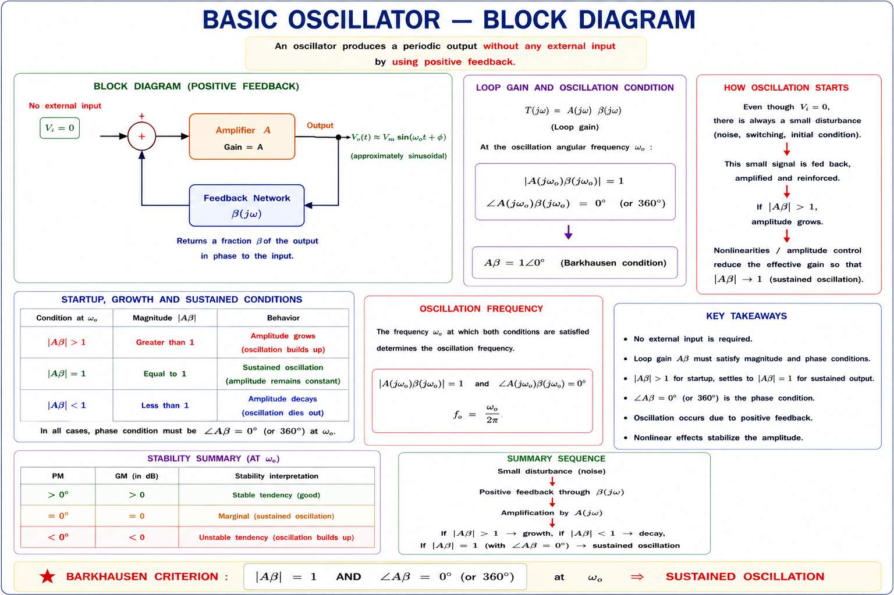
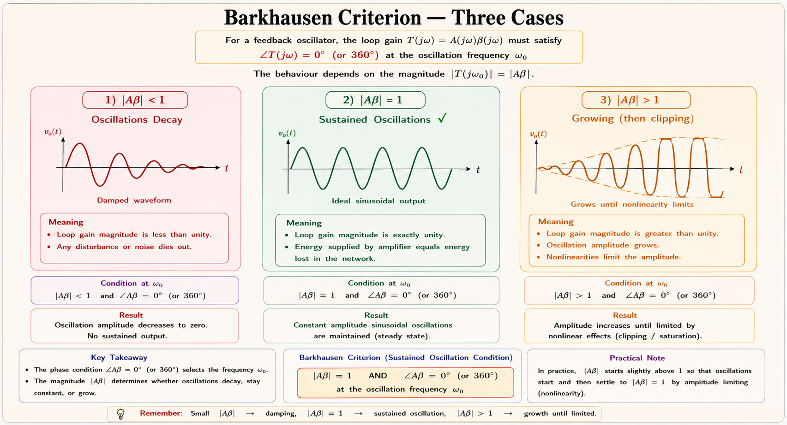
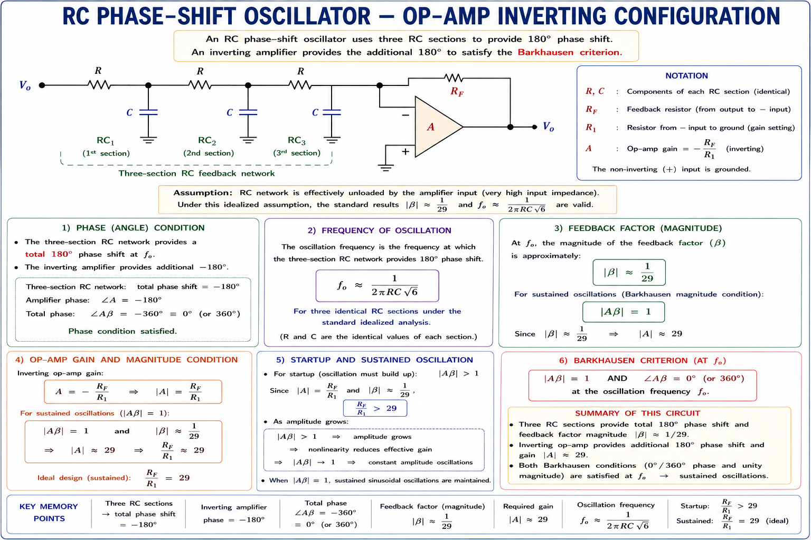
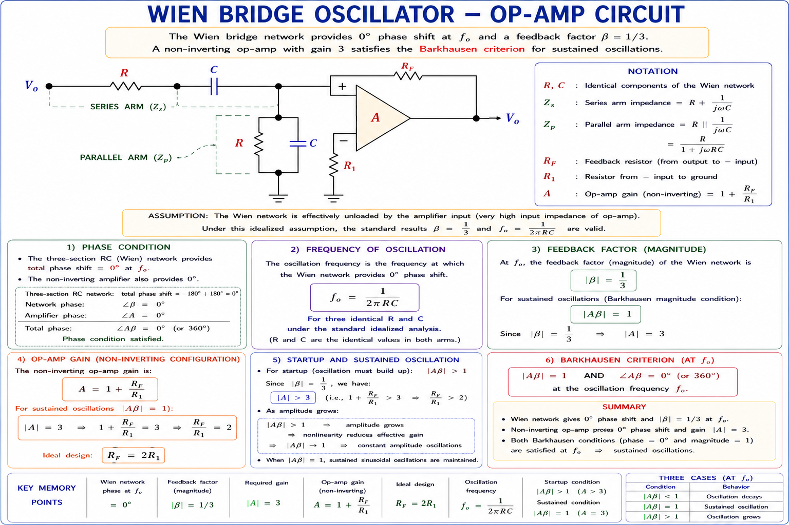
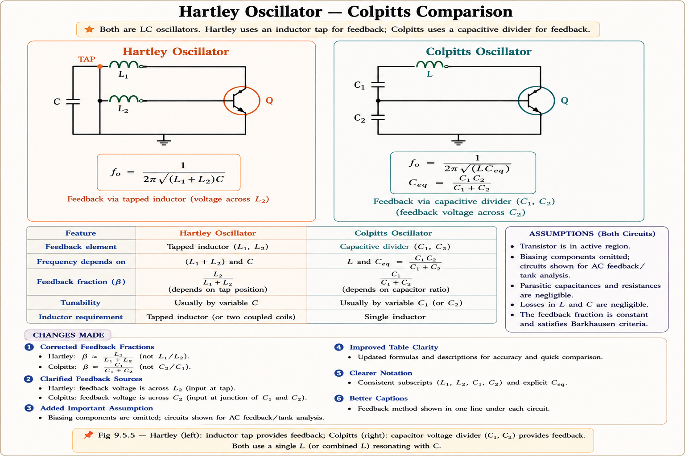
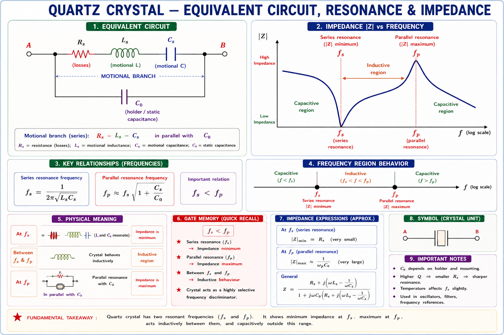

Oscillators
Barkhausen Criterion, RC Oscillators (Phase Shift, Wien Bridge), LC Oscillators (Hartley, Colpitts, Clapp), Crystal Oscillators and Frequency Stability — comprehensive GATE, IES, and PSU exam coverage with full derivations, SVG circuit diagrams, and solved numericals.
Introduction & Why Oscillators Matter
An oscillator is an electronic circuit that generates a periodic, repetitive waveform — a sine wave, square wave, or triangular wave — without any external input signal. It converts DC power from the supply into an AC output of a desired frequency. This is one of the most fundamental building blocks in electronics engineering.
Think of a pendulum clock. Once you give it a push, it keeps swinging at its natural frequency — converting stored potential energy into kinetic energy, back and forth. An oscillator does exactly the same electrically: it uses the energy stored in reactive elements (L and C, or R and C) and feeds back a fraction of the output to sustain the oscillations indefinitely. The amplifier compensates for the energy lost in resistance each cycle.
Where Are Oscillators Used?
- ▸RF carrier generation in AM/FM transmitters
- ▸Local oscillator in superheterodyne receivers
- ▸Clock generation in mobile phones (crystal oscillator)
- ▸CPU clock (crystal oscillator — 1 GHz to 5 GHz)
- ▸USB, HDMI, and PCI clocking circuits
- ▸Real-time clocks (RTC) in embedded systems
- ▸Signal generators in test & measurement labs
- ▸Function generators (sine/square/triangular)
- ▸Ultrasonic transducer driving circuits
- ▸PWM signal generation in inverters
- ▸Switching frequency control in SMPS
- ▸Induction heating at RF frequencies

Barkhausen Criterion 🟢 HIGH
The Barkhausen Criterion, proposed by German physicist Heinrich Georg Barkhausen in 1921, gives the necessary (but not sufficient) conditions for a linear feedback amplifier to produce sustained sinusoidal oscillations. It applies to the loop gain of the amplifier-feedback system.[1]
Statement of the Criterion
For an amplifier with open-loop gain \(A(j\omega)\) and feedback factor \(\beta(j\omega)\), the loop gain is defined as \(T(j\omega) = A(j\omega)\cdot\beta(j\omega)\). Sustained oscillations occur when both of the following are simultaneously satisfied:
Condition 1: The signal must travel around the feedback loop exactly once with unity gain — no amplification, no attenuation. If \(|A\beta| > 1\), oscillations grow; if \(|A\beta| < 1\), oscillations decay. Only \(|A\beta|=1\) gives sustained oscillations.
Condition 2: The feedback must be positive (in-phase) at the frequency of oscillation. In a non-inverting amplifier (0° phase), the feedback network must also contribute 0°. In an inverting amplifier (180°), the feedback network must contribute exactly 180° to make the total loop phase = 360° = 0°.
Why "Necessary but Not Sufficient"?
The Barkhausen criterion tells us when the circuit will oscillate, but not whether the oscillations will be stable in amplitude. In practice, a practical oscillator starts with \(|A\beta| > 1\) (so oscillations grow from noise), and a nonlinear limiting mechanism (transistor saturation, AGC, thermistor) reduces \(|A\beta|\) back to 1 at the desired amplitude. This amplitude stabilisation is beyond the linear Barkhausen theory.[2]

Many students write the phase condition as \(\angle A\beta = 180^\circ\). This is wrong. The condition is \(\angle A\beta = 0^\circ\) or \(360^\circ\) (positive feedback, in-phase). The 180° confusion arises from the inverting amplifier: the amplifier contributes 180°, the feedback network contributes 180°, and \(180^\circ + 180^\circ = 360^\circ = 0^\circ\). Always evaluate the total loop phase.
RC Oscillators — Phase Shift Oscillator 🟢 HIGH
The Phase Shift Oscillator uses an inverting amplifier (BJT in CE configuration or op-amp in inverting mode) that already contributes 180° of phase shift. The RC feedback network then provides the remaining 180° at precisely one frequency, making the total loop phase shift = 360° = 0°. This unique frequency is the oscillation frequency.[1][3]
RC Feedback Network Analysis
Three identical RC sections are cascaded. Each section provides up to 90° of phase shift, but loading between sections is important. For three identical RC sections (each R and C), the analysis using the ladder network method (first popularised in Millman & Halkias) gives the following key results:
The transfer function of three RC sections (going from output back to the base/inverting input) is: $$\beta(j\omega) = \frac{1}{1 - 5/(\omega RC)^2 - j[6/(\omega RC) - 1/(\omega RC)^3]}$$ Setting the imaginary part = 0 gives \(\omega_0 = 1/(RC\sqrt{6})\). The magnitude at this frequency is \(|\beta| = 1/29\). Since the feedback attenuates by 29×, the amplifier gain must be at least 29 to satisfy \(|A\beta| = 1\).

\(|A|\) = \(\frac{R_f}{R_1}\) \(\ge\) 29 [Minimum gain condition]
For BJT (CE config): \(h_{fe}\) \(\ge\) \(23 + 29\left(\frac{R}{R_c}\right) + 4\left(\frac{R_c}{R}\right)\)
where \(R_c\) = collector resistance
"Phase Shift = Painful 29" — The gain of 29 is a classic GATE numerical. If gain < 29, oscillations die. The frequency formula: think "RC ladder with ROOT 6" → \(f_0 = \frac{1}{2\pi RC\sqrt{6}}\). The √6 comes from the square root of (number of sections)² = √(3×2) for the three-section ladder.
Wien Bridge Oscillator 🟢 HIGH
The Wien Bridge Oscillator, invented by Max Wien (1891) and later popularised by Hewlett in 1939 in a famous op-amp implementation, uses a non-inverting amplifier with a Wien bridge (RC lead-lag network) as the frequency-selective feedback network. It is widely used for audio frequency generation (20 Hz to 20 kHz) and as the basis for precision signal generators.[1][2]
The Wien Bridge Network
The frequency-selective element is a Wien bridge, which is an RC series arm in the signal path and an RC parallel arm to ground. At the resonant frequency, the bridge is perfectly balanced and provides exactly 0° phase shift with a transfer ratio of 1/3.

\(\beta\) = \(\frac{1}{3}\) [Feedback fraction at \(f_0\)]
\(A\) = \(1 + \frac{R_f}{R_1}\) = \(3\) (so \(R_f = 2 R_1\)) [Non-inverting gain]
Amplitude stabilisation: use thermistor or diode limiter to control \(R_f\)
- ▸Low distortion sinusoidal output
- ▸Easily tunable: change R or C
- ▸Wide frequency range (audio: 20 Hz–20 kHz)
- ▸Good frequency stability with matched RC
- ▸Not suitable for very high frequencies (RF)
- ▸Amplitude requires external stabilisation
- ▸Uses two RC networks (requires matching)
LC Oscillators — Hartley & Colpitts 🟢 HIGH
When oscillation frequencies move into the radio frequency (RF) range (hundreds of kHz to hundreds of MHz), RC oscillators become impractical. LC oscillators use a tuned tank circuit (LC resonator) as the frequency-selective feedback element. The tank circuit stores energy alternately in the magnetic field of the inductor and the electric field of the capacitor, producing natural sinusoidal oscillations.[1][3]
Imagine a bucket of water suspended on a spring. Pulling it down (storing energy in the spring = inductor) and releasing it causes oscillation — the energy sloshes between spring potential energy and kinetic energy of the water. The LC tank similarly oscillates between energy in L (magnetic) and energy in C (electric). The natural frequency is \(\omega_0 = \frac{1}{\sqrt{LC}}\), determined entirely by L and C.
Hartley Oscillator
The Hartley Oscillator (1915, Ralph Hartley) uses a tapped inductor: the inductor is divided into two parts (\(L_1\) and \(L_2\)), and the tap point provides the feedback signal. The capacitor C is connected in parallel with the series combination \(L_1\) + \(L_2\).[1]

Colpitts Oscillator
The Colpitts Oscillator (1918, Edwin Colpitts) is the capacitor-dual of the Hartley: it uses a capacitor voltage divider (\(C_1\) and \(C_2\) in series) as the feedback element, with a single inductor L in parallel. The feedback voltage is taken across \(C_2\).[1][3]
\(L_{total}\) = \(L_1 + L_2 + 2M\) (\(M\) = mutual inductance, if coils are coupled)
\(f_0\) = \(\frac{1}{2\pi\sqrt{L_{total} C}}\)
Feedback ratio = \(\frac{L_1}{L_2}\) (voltage ratio across the tap)
COLPITTS OSCILLATOR
\(C_{eq}\) = \(\frac{C_1 C_2}{C_1 + C_2}\) [Series combination]
\(f_0\) = \(\frac{1}{2\pi\sqrt{L C_{eq}}}\)
Feedback ratio = \(\frac{C_1}{C_2}\) (impedance is reciprocal of capacitance!)
Condition: \(g_m \left(\frac{C_2}{C_1}\right) \ge 1\) (for BJT Colpitts, \(g_m\) = transconductance)
In Hartley, the feedback ratio = \(L_1\)/\(L_2\) (inductance ratio). In Colpitts, the feedback ratio = \(C_1\)/\(C_2\). Note this is reversed from what you might expect: a larger \(C_2\) means a smaller impedance, so a smaller feedback voltage — hence feedback ∝ \(C_1\)/\(C_2\), not \(C_2\)/\(C_1\). This confusion costs marks every year in GATE.
Clapp Oscillator 🟡 MEDIUM
The Clapp Oscillator (J. K. Clapp, 1948) is a modification of the Colpitts oscillator with an additional capacitor \(C_3\) placed in series with the inductor L. This additional element makes the oscillation frequency primarily dependent on L and \(C_3\) (which are usually fixed and stable), making the Clapp oscillator significantly more frequency stable than the Colpitts when \(C_1\) and \(C_2\) vary due to transistor parasitic capacitances.[3]

In Colpitts, \(C_1\) and \(C_2\) are directly across the transistor terminals, so transistor parasitic capacitances (which vary with temperature, bias, and aging) modulate the oscillation frequency. In Clapp, \(C_3\) is the dominant frequency-determining capacitor, and it is not associated with any transistor terminal — so parasitics have negligible effect on \(f_0\). This makes the Clapp oscillator preferred in precision RF applications.
| Parameter | Hartley | Colpitts | Clapp |
|---|---|---|---|
| Frequency element | Tapped L, single C | Single L, tapped C | Single L, \(C_3\) + tapped \(C_1\),\(C_2\) |
| Feedback element | \(L_1\)/\(L_2\) ratio | \(C_1\)/\(C_2\) ratio | \(C_1\)/\(C_2\) ratio (same as Colpitts) |
| \(f_0\) formula | \(\frac{1}{2\pi\sqrt{(L_1+L_2)C}}\) | \(\frac{1}{2\pi\sqrt{L C_{eq}}}\) | \(\approx \frac{1}{2\pi\sqrt{L C_3}}\) |
| Frequency range | Up to ~30 MHz | Up to ~300 MHz | Up to ~300 MHz |
| Frequency stability | Moderate | Good | Excellent |
| Effect of transistor parasitics | Moderate | Significant | Negligible |
| Application | AM radio, LF/MF RF | UHF TV tuners, RF | Precision RF, frequency synthesisers |
Crystal Oscillator 🟢 HIGH
A crystal oscillator uses the piezoelectric effect of a quartz crystal as the frequency-determining element. Quartz (SiO₂) develops a voltage across it when mechanically stressed (direct piezoelectric effect), and conversely deforms mechanically when a voltage is applied (inverse effect). This creates a mechanical resonator of extraordinary precision — quality factors (Q) of 10,000 to 500,000, compared to \(Q \approx 50\text{–}300\) for LC circuits.[1][2]
Your smartphone's timing is governed by a quartz crystal oscillator. Typical CPU crystals run at 32.768 kHz (\(= 2^{15}\) Hz) for real-time clocks, chosen because dividing by 2 fifteen times gives exactly 1 Hz. The quartz crystal in a wristwatch keeps time to within ±15 seconds per month — equivalent to a frequency accuracy of ±6 parts per million (ppm).
Equivalent Circuit of a Quartz Crystal
The electrical equivalent circuit of a quartz crystal consists of a series branch (\(L_s\), \(C_s\), \(R_s\)) in parallel with the holder capacitance \(C_p\). The series resonance is the mechanical resonance of the crystal; the parallel resonance occurs with \(C_p\).

Parallel Resonance: \(f_p\) = \(f_s \sqrt{1 + \frac{C_s}{C_p}}\) [Maximum \(Z\); \(C_s \ll C_p \implies f_p \approx f_s\)]
Quality Factor: \(Q\) = \(\frac{\omega_s L_s}{R_s}\) \(\approx\) 10,000 to 500,000
Frequency stability: ppm = ±1 to ±100 ppm (vs ±0.1% for LC circuits)
| Type | Frequency Range | Stability | Application |
|---|---|---|---|
| AT-Cut Crystal | 1–30 MHz | ±10 ppm / year | Microcontrollers, clocks |
| TCXO | 1–30 MHz | ±0.5 ppm | GPS, mobile base stations |
| OCXO | 1–100 MHz | ±0.001 ppm | Test equipment, satellite |
| MEMS Oscillator | 1–700 MHz | ±25 ppm | IoT, wearables |
| LC Oscillator | 10 MHz–10 GHz | ±0.1% (1000 ppm) | RF stage, VCO |
Frequency Stability 🟡 MEDIUM
Frequency stability is the ability of an oscillator to maintain its oscillation frequency over time, temperature, supply voltage variations, and load changes. It is one of the most critical specifications in oscillator design, particularly for communication systems.[2][3]
Factors Affecting Frequency Stability
- ▸R, L, C values change with temperature
- ▸Transistor parameters (\(\beta, V_{be}\)) are temperature-dependent
- ▸Solution: use AT-cut crystals (near-zero TC at 25–50°C) or OCXO (oven-controlled)
- ▸Change in load impedance pulls the frequency
- ▸Solution: use a buffer amplifier between oscillator and load
- ▸High-Q resonators reduce load pulling sensitivity
- ▸Bias point of transistor shifts → changes parasitic C
- ▸Solution: regulated power supply; use Clapp (less sensitive)
- ▸Colpitts more sensitive than Clapp to supply changes
- ▸Crystal aging: stress relaxation shifts \(f_s\) by 1–5 ppm/year
- ▸Component aging: drift in L and C values
- ▸Solution: burn-in, hermetic sealing of crystals
OCXO (0.001 ppm) → TCXO (0.5 ppm) → Crystal oscillator (10 ppm) → Clapp LC (100 ppm) → Colpitts LC (500 ppm) → Hartley LC (1000 ppm) → RC oscillators (±5%). GATE frequently asks to rank oscillators by frequency stability — crystal > LC > RC is the key hierarchy.
Numerical Examples
Given: R = 10 kΩ = 10×10³ Ω, C = 0.01 μF = 0.01×10⁻⁶ F
(a) Oscillation Frequency:
(b) Minimum Gain: For a three-section RC phase shift oscillator, the minimum amplifier gain is always:
\(\sqrt{6} \approx 2.449\). \(RC = 10\text{k} \times 0.01\mu = 10^{-4}\text{ s}\). \(f_0 = \frac{1}{2\pi \times 2.449 \times 10^{-4}} = \frac{1}{1.538 \times 10^{-3}} \approx 650\text{ Hz}\). ✓
Step 1: Equivalent capacitance (series combination)
Step 2: Oscillation frequency
Step 3: Feedback fraction
Students often write β = \(C_2\)/\(C_1\). Remember: in Colpitts, the feedback voltage appears across \(C_2\), and the ratio is \(C_1\)/\(C_2\) (the one that does NOT have feedback voltage across it divided by the one that DOES). Think of it as an impedance divider: Z_C2/Z_total ∝ 1/\(C_2\), but the voltage divider ratio = Z_C2/(Z_C1+Z_C2) = \(C_1\)/(\(C_1\)+\(C_2\)) — so feedback fraction at resonance ≈ \(C_1\)/\(C_2\) for large C values.
(a) Series resonance frequency:
(b) Parallel resonance frequency:
(c) Quality factor Q:
This Q ≈ 3880 is extremely high compared to typical LC circuits (Q ≈ 50–200), confirming the crystal's exceptional frequency selectivity.
GATE & IES Previous Year Questions
For a feedback oscillator, the Barkhausen criterion requires the total phase shift around the loop to be:
- (A) 90°
- (B) 180°
- (C) 0° or 360° (integer multiple)
- (D) 270°
The loop must provide positive feedback: the signal must reinforce itself after completing one full trip. Total loop phase = 0° (or any multiple of 360°). This means the feedback is in-phase with the original signal. Answer: (C).
In a Wien bridge oscillator using an op-amp, if the feedback fraction β = 1/3, then the minimum closed-loop gain required is:
- (A) 1
- (B) 2
- (C) 3
- (D) 29
Barkhausen: |Aβ| = 1. β = 1/3 ⟹ A = 1/β = 3. This is implemented as A = 1 + Rf/R1 = 3, so Rf = 2R1. Answer: (C). Note: 29 is the gain for Phase Shift Oscillator, a common distractor!
In a Colpitts oscillator, the feedback network consists of:
- (A) A tapped inductor and a single capacitor
- (B) A single inductor and two capacitors in series
- (C) Three RC sections providing 180° phase shift
- (D) A crystal element in series with the tank circuit
(A) is Hartley, (C) is Phase Shift Oscillator, (D) is Crystal/Clapp. Colpitts uses a capacitor tap (two capacitors in series) with a single inductor. Answer: (B).
The extremely high frequency stability of a crystal oscillator (compared to an LC oscillator) is primarily due to its:
- (A) Low operating frequency
- (B) Very high Q-factor (10,000–500,000)
- (C) Use of positive feedback
- (D) Temperature coefficient of −25 ppm/°C
Higher Q means sharper resonance — the oscillator is more difficult to pull away from the resonant frequency by perturbations. LC circuits have Q ≈ 50–300; crystal Q ≈ 10,000–500,000 — up to 1000× better. Answer: (B).
An op-amp-based phase shift oscillator uses R = 5 kΩ and C = 0.1 μF in three identical RC sections. The frequency of oscillation (in Hz) is approximately:
- (A) 65 Hz
- (B) 130 Hz
- (C) 260 Hz
- (D) 975 Hz
\(f_0 = \frac{1}{2\pi \times 5\text{k} \times 0.1\mu \times \sqrt{6}} = \frac{1}{2\pi \times 5 \times 10^3 \times 10^{-7} \times 2.449} = \frac{1}{2\pi \times 1.224 \times 10^{-3}} = \frac{1}{7.695 \times 10^{-3}} \approx 130\text{ Hz}\). Answer: (B).
Common Mistakes & GATE Traps
- ▸Wrong: "Phase condition is ∠Aβ = 180°"
- ▸Correct: ∠Aβ = 0° (or 360°)
- ▸The 180° from inverting amp + 180° from network = 360° ✓
- ▸Wrong: Gain = 29 for Wien Bridge
- ▸Correct: Gain = 3 for Wien Bridge
- ▸Gain = 29 is ONLY for Phase Shift Oscillator
- ▸Wrong: β = \(C_2\)/\(C_1\) in Colpitts
- ▸Correct: β = \(C_1\)/\(C_2\)
- ▸Feedback voltage ∝ 1/\(C_2\) (capacitive impedance), so β ∝ \(C_1\)/\(C_2\)
- ▸Wrong: \(f_0 = \frac{1}{2\pi\sqrt{(L_1+L_2)C}}\) always
- ▸Correct: If \(L_1\) and \(L_2\) are mutually coupled: \(L_{total} = L_1 + L_2 + 2M\)
- ▸M = mutual inductance; often ignored but asked in GATE
- ▸Wrong: \(f_s\) always equals \(f_p\) for a crystal
- ▸Correct: \(f_p\) slightly greater than \(f_s\) (by \(C_s\)/2Cp fraction)
- ▸Crystal is INDUCTIVE between \(f_s\) and \(f_p\) — used as inductor
- ▸Wrong: Clapp and Colpitts have same stability
- ▸Correct: Clapp >> Colpitts in stability
- ▸Clapp \(f_0 \approx \frac{1}{2\pi\sqrt{L C_3}}\), independent of transistor parasitics
Have a doubt about oscillators? Ask any concept question, numerical, or GATE-style problem below.
Quick Revision Sheet
\(|A\beta| = 1\) AND \(\angle A\beta = 0^\circ \text{ (or } 360^\circ\text{)}\). Necessary but not sufficient for oscillation. Amplitude needs nonlinear limiting.
\(f_0 = \frac{1}{2\pi RC\sqrt{6}}\). Three RC sections, each 60°. Gain \(\ge 29\). Uses inverting amplifier. Audio frequency range.
\(f_0 = \frac{1}{2\pi RC}\). \(\beta = 1/3\). Gain \(A = 3\) (\(R_f = 2R_1\)). Non-inverting amplifier. Best for low-distortion audio sine waves.
\(f_0 = \frac{1}{2\pi\sqrt{L_{total} C}}\). \(L_{total} = L_1 + L_2 + 2M\). Feedback \(\propto \frac{L_1}{L_2}\). Tapped inductor. RF range.
\(f_0 = \frac{1}{2\pi\sqrt{L C_{eq}}}\). \(C_{eq} = \frac{C_1 C_2}{C_1 + C_2}\). \(\beta = \frac{C_1}{C_2}\). Tapped capacitor. RF to UHF range.
Adds \(C_3\) in series with L. \(f_0 \approx \frac{1}{2\pi\sqrt{L C_3}}\). Better stability than Colpitts. \(C_3 \ll C_1, C_2\).
\(f_s = \frac{1}{2\pi\sqrt{L_s C_s}}\). \(f_p = f_s \sqrt{1 + \frac{C_s}{C_p}}\). \(Q = 10\text{k}\text{–}500\text{k}\). Inductive between \(f_s\) and \(f_p\). ±ppm stability.
OCXO > TCXO > Crystal > Clapp > Colpitts > Hartley > RC. Crystal > LC > RC for GATE ranking.
Wien gain = 3 (not 29). Colpitts β = \(C_1\)/\(C_2\) (not \(C_2\)/\(C_1\)). Loop phase = 0° (not 180°). Hartley L = \(L_1\)+\(L_2\)+2M if coupled.
| Oscillator | Frequency f₀ | Gain Condition | Feedback Element | GATE Prob. |
|---|---|---|---|---|
| Phase Shift | \(\frac{1}{2\pi RC\sqrt{6}}\) | \(|A| \ge 29\) | 3 × RC section (60° each) | 🟢 High |
| Wien Bridge | \(\frac{1}{2\pi RC}\) | \(A = 3; R_f = 2R_1\) | RC series + RC parallel | 🟢 High |
| Hartley | \(\frac{1}{2\pi\sqrt{(L_1+L_2)C}}\) | \(g_m \ge \frac{L_1}{L_2 R_p}\) | Tapped inductor (\(L_1\), \(L_2\)) | 🟢 High |
| Colpitts | \(\frac{1}{2\pi\sqrt{L C_{eq}}}\) | \(g_m \ge \frac{C_2}{C_1 R_p}\) | Tapped capacitor (\(C_1\), \(C_2\)) | 🟢 High |
| Clapp | \(\approx \frac{1}{2\pi\sqrt{L C_3}}\) | Same as Colpitts | Colpitts + \(C_3\) in L branch | 🟡 Medium |
| Crystal | \(\approx \frac{1}{2\pi\sqrt{L_s C_s}}\) | \(|A\beta| = 1\) | Quartz crystal (Q = 10k+) | 🟢 High |
- [1]Millman, J. & Halkias, C. C., Electronic Devices and Circuits, Tata McGraw-Hill — the foundational derivation of phase shift, Wien bridge, Hartley and Colpitts oscillators used in all GATE syllabi.
- [2]Sedra, A. S. & Smith, K. C., Microelectronic Circuits, Oxford University Press — amplitude stabilisation, Barkhausen criterion, crystal oscillators, and frequency stability discussions.
- [3]Boylestad, R. L. & Nashelsky, L., Electronic Devices and Circuit Theory, Pearson — LC oscillators (Hartley, Colpitts, Clapp), BJT gain conditions, and transistor-level oscillator design.
- [4]GATE Official Papers & Solutions, EC & EE branches, 2014–2024 — PYQ patterns, frequency calculations, and conceptual questions on oscillators.